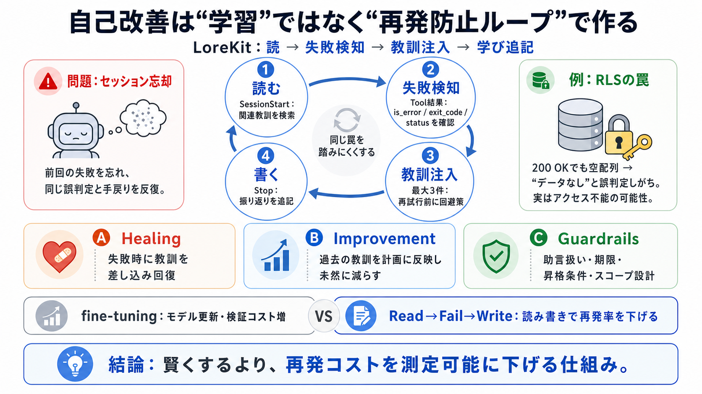

失うもの
前回の「何がダメだったか」

AIエージェントは「学習（fine-tuning）」でなく、読み書きループ（読→失敗→教訓差し込み→追記）で同じ罠を外れにくくできる。
AIエージェントはセッションごとの忘却（アムネジア）で、同じ失敗を繰り返しやすい。メモリが無い/弱いと、毎回リカバリ不能になりやすい。
回復はモデル追加学習ではなく、(1)前回の学びを読み出し、(2)失敗を検知したら該当する学びを注入し、(3)失敗から得た教訓を書き込む、という循環で起きる。
エージェントのライフサイクルフック（SessionStart／tool結果／Stop）に “読む・失敗時に注入・止める時に書く” を組み込む。
例：SupabaseのRLS（行レベルセキュリティ）が原因で、HTTPは200でも配列が空になることがある。従来は “空＝レコードなし” と誤判定し、手戻りが反復する。
ツール呼び出しが失敗として判定されると、関連する既存教訓を最大3件まで検索・注入し、再試行の前に回避策を与える。
改善には2種類ある：失敗からの回復（ヒーリング）と、次の実装・計画へ過去の教訓を反映する（インプルーヴ）。
LoreKitの狙いは “学習で賢くなる” より、仕組みにより「鈍さを測定可能に減らす」こと。課金的に見積もりやすい形で手戻りを削る。
メモリを無制限に増やすと誤った信念が固定化されるため、助言（advisory）に留める・期限や昇格条件を設けるガードレールが重要。
メモリの適用範囲（スコープ）を細かく分け、狭い範囲ほど優先する。さらに昇格で広げることで、誤爆（取り違え）を抑える。
照合がサブストリング（部分一致）だと、言い回しの差で同じ失敗でも教訓が注入されない可能性がある。また失敗判定を保守的にすると、取りこぼしも起きうる。
LoreKitは、自己修復・自己改善をML問題として扱わず、ライフサイクルフックに “読→失敗→教訓注入→学び追記” を組むことで、再発コストを下げる。
この要約スライドはユーザー提示の本文内容に基づき構成しています。原記事・実装ドキュメント等は手元の該当資料をご参照ください。
| 項目 | 内容 |
|---|---|
| Supabase RLS | 行レベルセキュリティにより「200 OKでも空配列」になり得る挙動の例 |
| LoreKit主張 | ML（fine-tuning）ではなく、読→失敗→教訓注入→追記のループ設計で自己改善する |
| ライフサイクルフック | SessionStart / tool結果 / Stop を用いた読み書き循環 |
| ガードレール | advisory、期限（例：90日）、昇格条件（例：seen_count≥3）、矛盾上書き抑制、秘密情報スクリーニング等 |
No references found